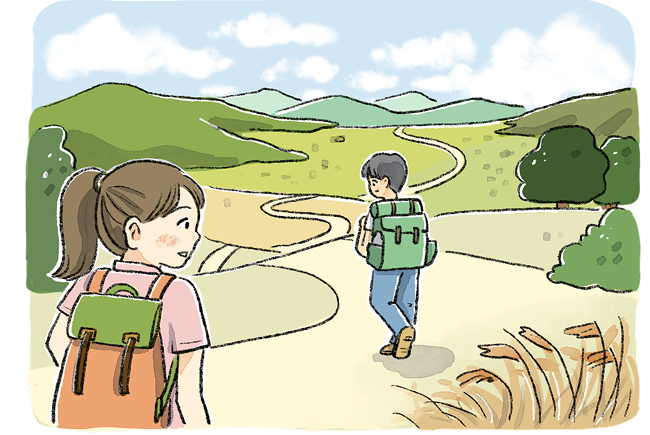

생각삶의 의미
 가장 큰 배움은 때때로 가장 큰 고통 속에 숨어 있다. 상실은 무엇이 소중한지 보여 주며, 사랑은 우 리의 진정한 모습을 가르쳐 준다. 두려움, 분노, 죄책감조차도 훌륭한 교사이다. 삶의 가장 어두운 시간에도 우리는 성장하고 있다. 살고 사랑하며 웃어라. 그리고 배워라. 이것이 우리가 이곳에 존재하는 까닭이다. 삶의 기간 동안 우리 모두에게는 배워야 할 것이 있다. 삶이라고 하는 길고 때로는 낯선 여행에서 우리는 많은 것 을 발견하며, 특히 우리 자신을 발견할 수 있다.
- 엘리자베스 퀴블러 로스 외, 『인생 수업』
● 삶의 고통스러운 순간으로부터 배움을 얻은 경험을 이야기해 보자.
지난 시험에서 공부한 만큼의 성적을 받지 못해서 우울했지만, 내가 부족한 부분을 파악하고 앞으로 어떻게 공부해야 할지 배울 수 있었다.